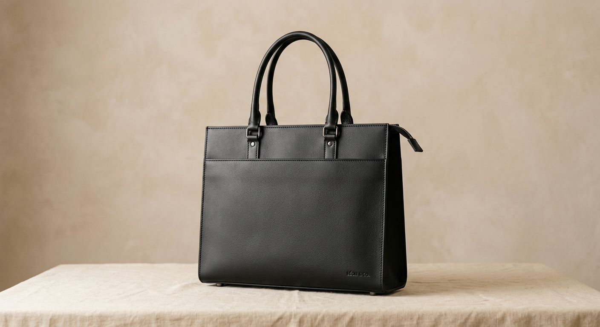
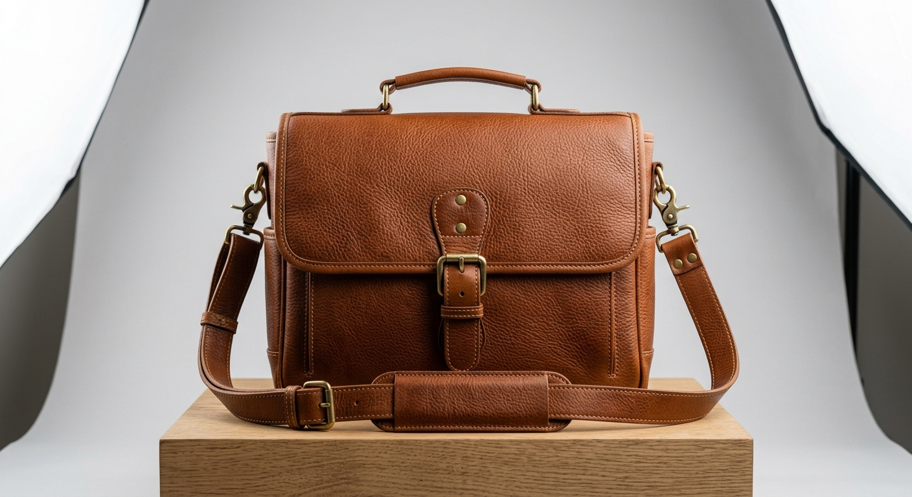

01 · The materialsChosen with care.
We look for materials with character, strength and a beautiful life ahead of them.
Good work is felt in every little detail.

01 · The materialsWe look for materials with character, strength and a beautiful life ahead of them.
 02 · Skilled hands
02 · Skilled hands
Each cut, seam and edge is handled by an artisan who knows the value of getting it right.

03 · The finishingThe small things make a piece feel like yours. We take the time to finish them well.

Our workshop in Siaya is where thoughtful ideas meet practical skill. Here, we make in small runs, learn from every piece, and keep the human touch close to the work.
Meet Aether Stitches